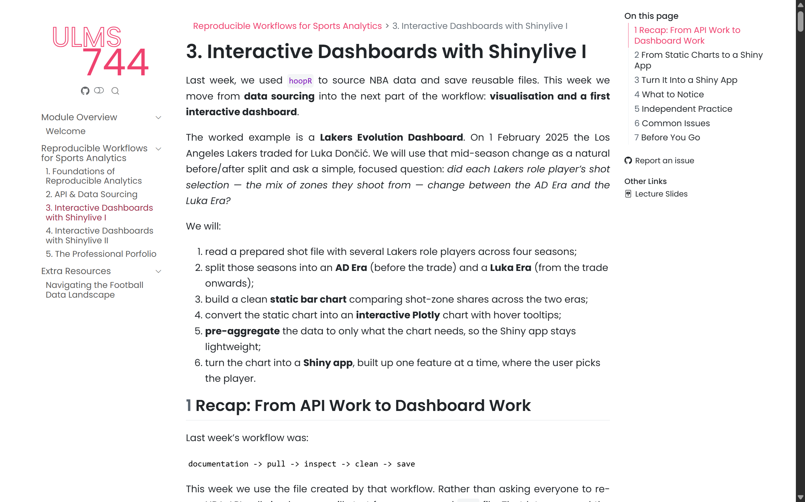
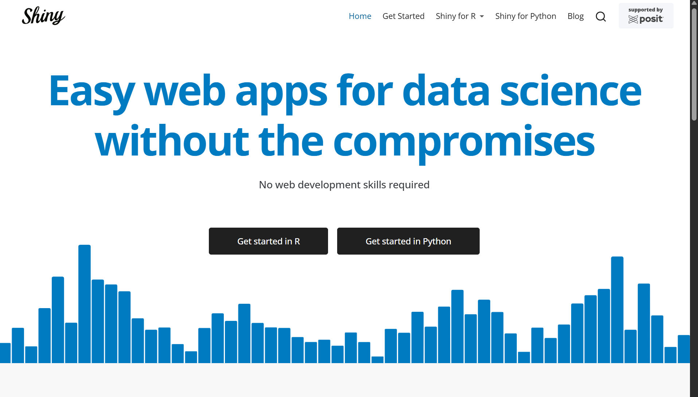
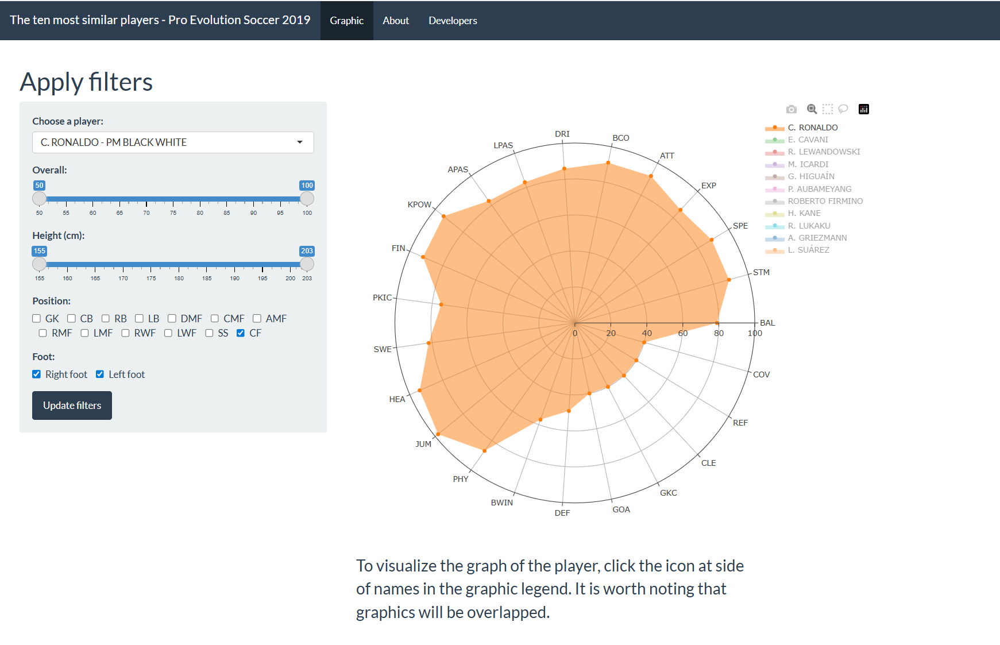
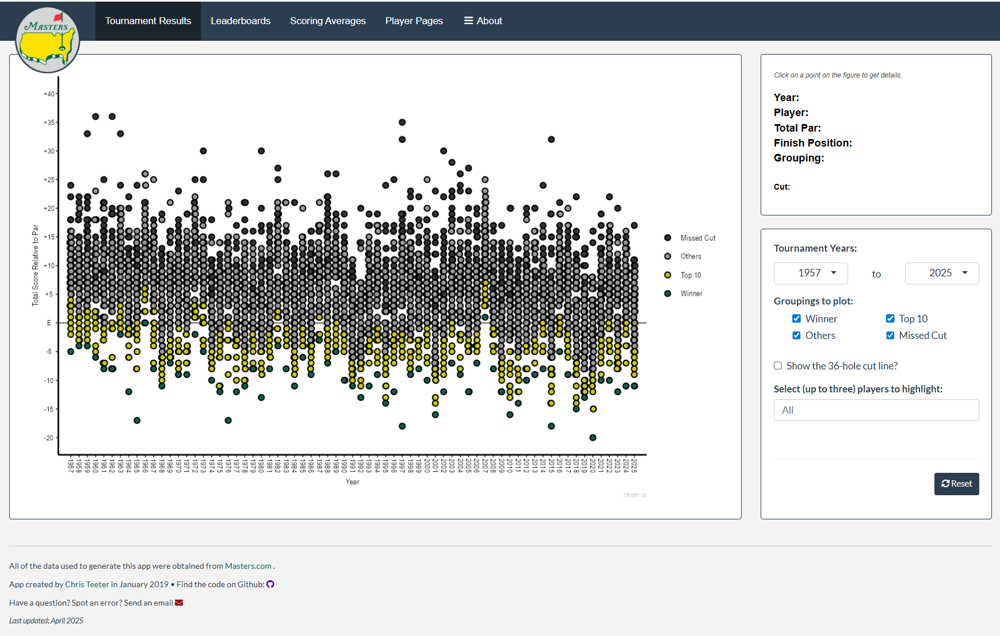

Week 9 Lecture
Dr Shunya Kimura
skimura@liverpool.ac.uk
Sports Analytics in Practice
Interactive Dashboards with Shinylive I

Module Outline
Last Week
- Used
hoopRto pull NBA team and player data. - Inspected raw data frames before summarising.
- Built cleaned team-level and player-level tables.
- Saved raw pulls in
data/raw/and cleaned files indata/cleaned/.
Quick Recap
Go To Workbook…

Our Plan
- Understand what R Shiny is.
- Learn the
ui/serverstructure. - Connect user inputs to chart outputs.
- Build a first local Shiny app from Workbook 3.
What Is R Shiny?
The Short Answer
- Shiny is an R framework for building interactive web apps.
- Users control inputs such as dropdowns, buttons and sliders.
- R responds by updating charts, tables or text.

Why Analysts Use It
- Users can explore data without editing code.
- One app can replace many repeated charts.
- You can share analysis as a tool, not just a report.


The Mental Model
The user does not see the R code. They see the app.
Static Chart vs Shiny App
Anatomy of a Shiny App
One File: app/app.R
A basic Shiny app has four parts:
The Two Core Objects
Keep that split clear.
UI
What the UI Does
The UI defines the page.
It contains:
- inputs, such as
selectInput(); - output placeholders, such as
plotOutput(); - layout, such as
fluidPage()orsidebarLayout().
Minimal UI
This says: put a plot on the page and call it zone_bars.
UI with a Dropdown
The dropdown value is stored as input$player.
UI with Layout
Inputs usually go in the sidebar. Outputs usually go in the main panel.
Server
What the Server Does
The server fills the UI placeholders.
The names must match.
Minimal Server
This proves the plot can live inside Shiny.
Reactive Server
Now the chart changes when the dropdown changes.
Reactivity
The Key Idea
You do not write:
Shiny handles that.
You write code that uses input$player, and Shiny watches it.
Dependency
If input$player changes, renderPlot() reruns.
Names Must Match
Most beginner Shiny bugs are name mismatches.
Build It in Stages
Stage 1: Minimal App
- Load
shot_zones.rds. - Show one chart.
- Hard-code one player.
Goal: prove the app runs.
Stage 2: Add an Input
- Create
player_choices. - Add
selectInput(). - Replace
"Rui Hachimura"withinput$player.
Goal: make the chart reactive.
Stage 3: Add Layout
- Add
titlePanel(). - Use
sidebarLayout(). - Put controls in
sidebarPanel(). - Put the chart in
mainPanel().
Goal: make the app easier to use.
Stage 4: Optional Plotly Output
The same UI/server pairing applies to Plotly.
The Shiny idea is the same: output placeholder in the UI, render function in the server.
Running the App
Start the App
From the project root:
This opens the local app in the RStudio viewer or browser.
Good Development Habit
Build one layer at a time.
Practical
Go To Workbook…
Questions?
Shunya Kimura
s.kimura@liverpool.ac.uk